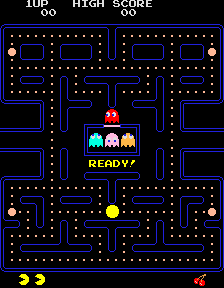

Pong (o Tele-Pong) fue un videojuego de la primera generación de videoconsolas publicado por Atari,
creado por Nolan Bushnell y lanzado el . Pong está basado en el deporte de
tenis de mesa (o ping pong). La palabra Pong es una marca registrada por Atari Interactive, mientras
que la palabra genérica "pong" es usada para describir el género de videojuegos. La popularidad de
Pong dio lugar a una demanda de infracción de patentes y ganada por parte de los fabricantes de Magnavox
Odyssey, que poseía un juego similar.
Pong es un juego de deportes en dos dimensiones que simula un tenis de mesa.
El jugador controla en el juego una paleta moviéndola verticalmente en la parte izquierda de
la pantalla, y puede competir tanto contra un oponente controlado por computadora, como con otro
jugador humano que controla una segunda paleta en la parte opuesta. Los jugadores pueden usar las
paletas para pegarle a la pelota hacia un lado u otro. El objetivo consiste en que uno de los
jugadores consiga más puntos que el oponente al finalizar el juego. Estos puntos se obtienen cuando
el jugador adversario falla al devolver la pelota.
La palabra Pong es una marca registrada por Atari Interactive, mientras que la palabra genérica "pong" es usada para describir el género de videojuegos.
La popularidad de Pong dio lugar a una demanda de infracción de patentes, ganada por parte de los fabricantes de Magnavox Odyssey, que poseía un juego similar.
Space Invaders
Space Invaders es un videojuego de arcade diseñado por Toshihiro Nishikado y lanzado al
mercado en . Su objetivo es eliminar oleadas de alienígenas con un cañón láser y obtener la
mayor cantidad de puntos posible.
El juego tiene una estructura muy simple pero apasionante. El jugador controla un cañón que puede
moverse a la derecha o izquierda y un botón de disparo. Tiene que ir destruyendo los aliens invasores
(de los cuales hay tres tipos: con forma de calamar, de cangrejo y de pulpo) que van acercándose a la
tierra cada vez más rápidamente. Cada cierto tiempo aparece en la pantalla, por encima de los invasores,
un platillo volador que se mueve aleatoriamente de derecha a izquierda o de izquierda a derecha y que no
agrega una puntuación definida, sino que los puntos que otorga cambian cada vez.
Además se tienen cuatro escudos de protección terrestre (más parecidos a búnkeres) que cubren al
jugador del fuego alienígena, aunque también le dificultan disparar desde detrás de ellos.
Para tener más éxito en el juego, se debe eliminar la fila que se acerca a uno de los lados del
monitor disparando a los invasores uno a uno e ir alternando dicho proceso.
Pac-Man

Pac-Man, llamado Comecocos en España, es un videojuego arcade creado por el diseñador de
videojuegos Toru Iwatani de la empresa Namco y lanzado el . Se convirtió en un
fenómeno mundial en la industria de los videojuegos, llego a tener el Récord Guiness del videojuego
de arcade más exitoso de todos los tiempos con un total de 293.822 máquinas vendidas de 1981 a 1987 y
acabó con el dominio de Space Invaders.
El protagonista del videojuego Pac-Man es un círculo amarillo al que le falta un sector por lo
que parece tener boca. Aparece en laberintos donde debe comer puntos pequeños, puntos mayores y otros
premios con forma de frutas y otros objetos. El objetivo del personaje es comer todos los puntos de la
pantalla, momento en el que se pasa al siguiente nivel o pantalla. Sin embargo, cuatro fantasmas o
monstruos, Shadow (Blinky), Speedy (Pinky), Bashful (Inky) y Pokey (Clyde), recorren el laberinto para
intentar comerse a Pac-Man. Estos fantasmas son, respectivamente, de colores rojo, rosa, cyan y naranja.
Hay cuatro puntos más grandes de lo normal situados cerca de las esquinas del laberinto que proporcionan
a Pac-Man la habilidad temporal de comerse a los monstruos (todos ellos se vuelven azules mientras Pac-Man
tiene esa habilidad). Después de haber sido tragados, los fantasmas se regeneran en "casa" (una caja
situada en el centro del laberinto).
Última modificación de esta página: 23 de junio de 2023
Basado en textos de la Wikipedia